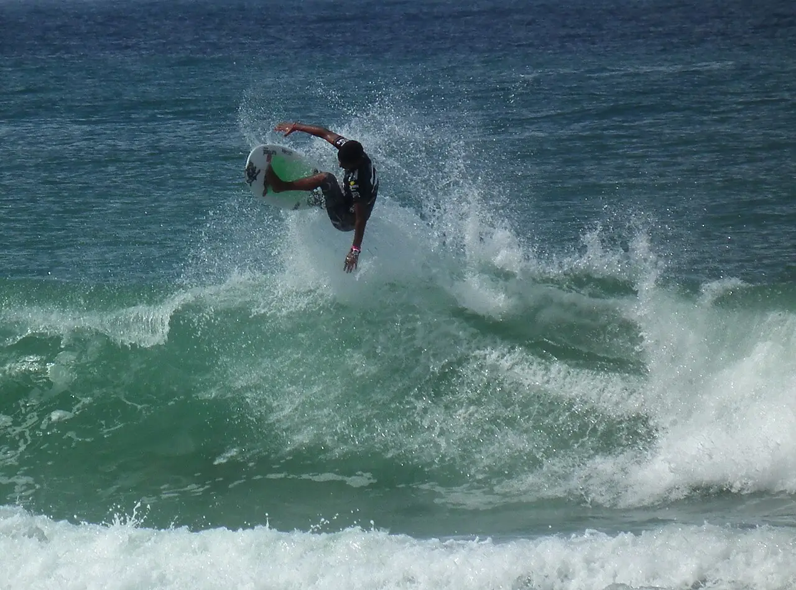

Santa Catalina
Veraguas, Panama · surf

Village de la côte Pacifique de Veraguas connu pour sa vague de pointe sur fond de roche volcanique, qui offre droites et gauches par bonne houle. C’est aussi le port de départ vers le parc national de Coiba.
- Lieu
- Veraguas, Panama
- Niveau
- Intermédiaire
- Activités
- surf
- Type d'eau
- Mer / océan
- Coordonnées
- 7.63, -81.26 (position approximative du secteur)
Dangers à connaître
- Fond de roche volcanique à fleur d’eau à marée basse.
- Vague puissante par grosse houle, réservée ces jours-là aux surfeurs confirmés.
Le conseil d'Ocean Buddy
Observe le spot depuis la pointe avant d’y aller : la vague devient puissante et creuse quand la houle grossit.
Ouvrir dans Ocean Buddy Télécharger sur l'App Store
Source : Fiche Ocean Buddy · septembre 2026 · à vérifier localement.